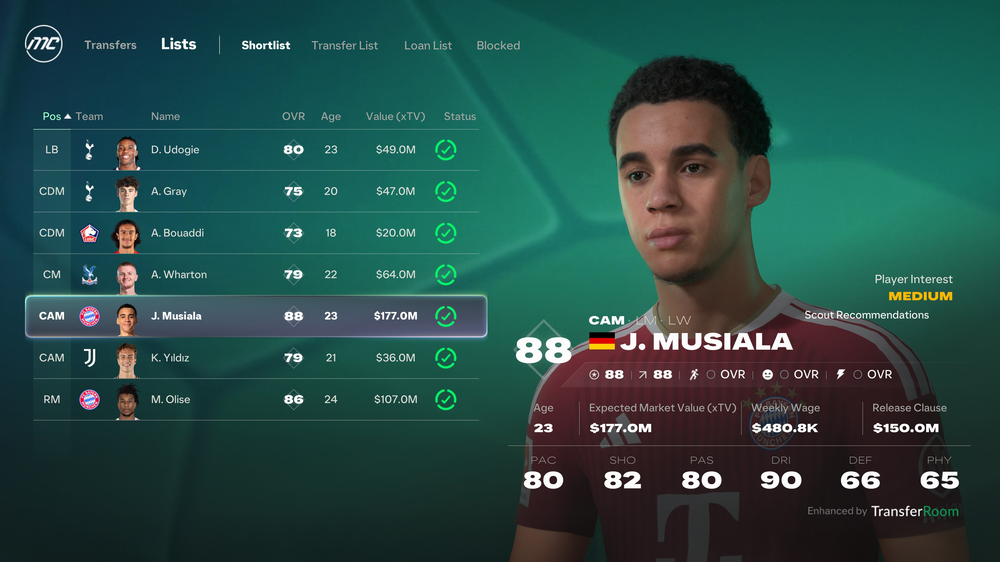
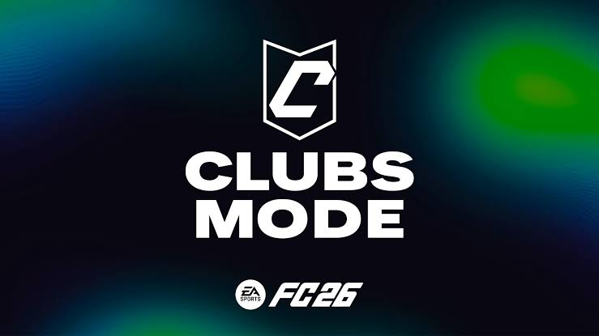

The World's Game 1.03.6
Nessa atualização, trazemos diversas melhorias e correções para tornar sua experiência ainda melhor.
🆕Novidades
- Adição de novos jogadores
- Atualização do modo carreira
- Correção de bugs
🎮Ajuste de gameplay
- Troca de cursor
Corrida prolongada- Adição de novos estádios
🤖 Correção de Bugs
- Queda de partida
- Batida de lateral
- Comandos atrasados
🎁Resgate seu bônus de EA POINTS
EAFC26POINTS
💬Reação da comunidade
Essa atualização vem para facilitar sua experiência no jogo, ajudando você a desfrutar ainda mais do EAFC26.
ALLANX
📖Glossário
- Ultimate Team
- Modo de jogo onde os jogadores criam sua equipe ideal.
- Modo Carreira
- Modo de jogo onde os jogadores acompanham a evolução de um jogador ao longo do tempo.
- Pro Clubs
- Modo de jogo onde os jogadores gerenciam e desenvolvem seus próprios clubes profissionais.


